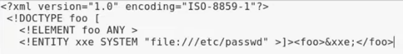

the first line the the xml version and metadata
then the dtd is everything between DOCTYPE to the end of passwd">]>
the dtd declared an element of foo and an entity named xxe which later gets called at the end of the line
in this case, the entity xxe means "call the file etc/passwd" so when it gets called, it will execute the command or in this case show the file at the path specified
*the file content will be shown as part of an error in the response*